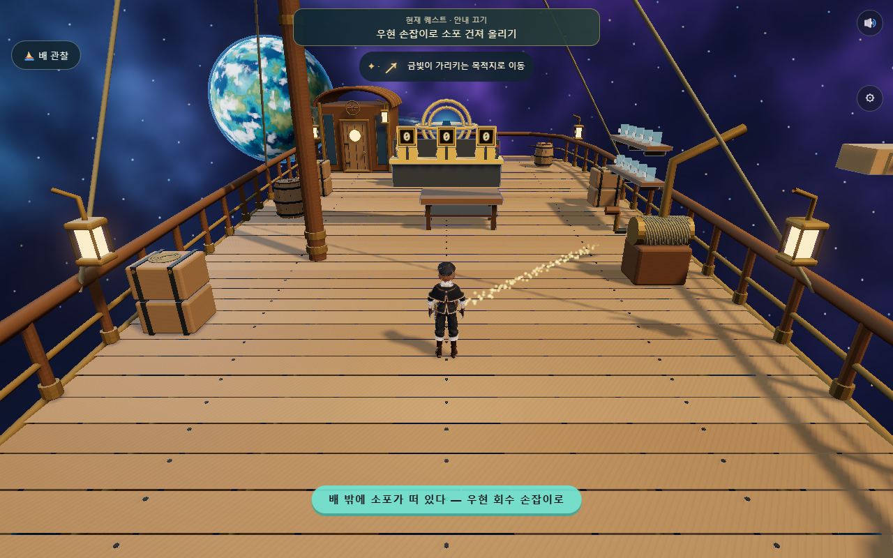
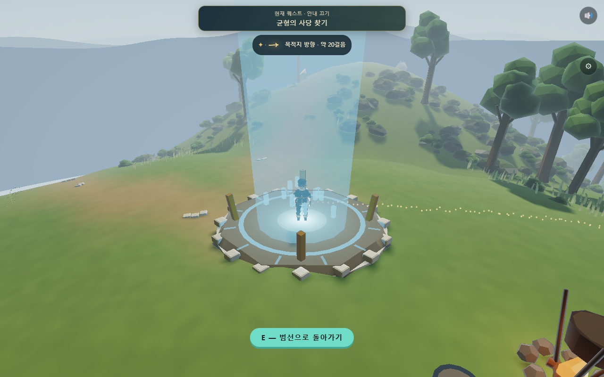
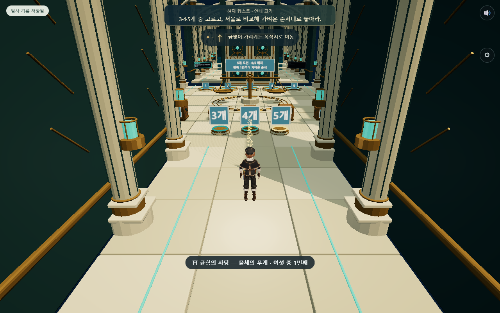
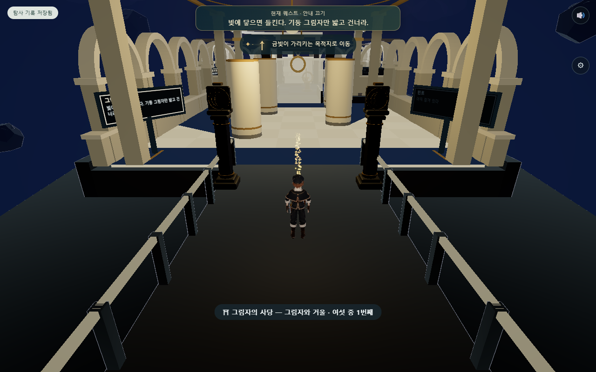
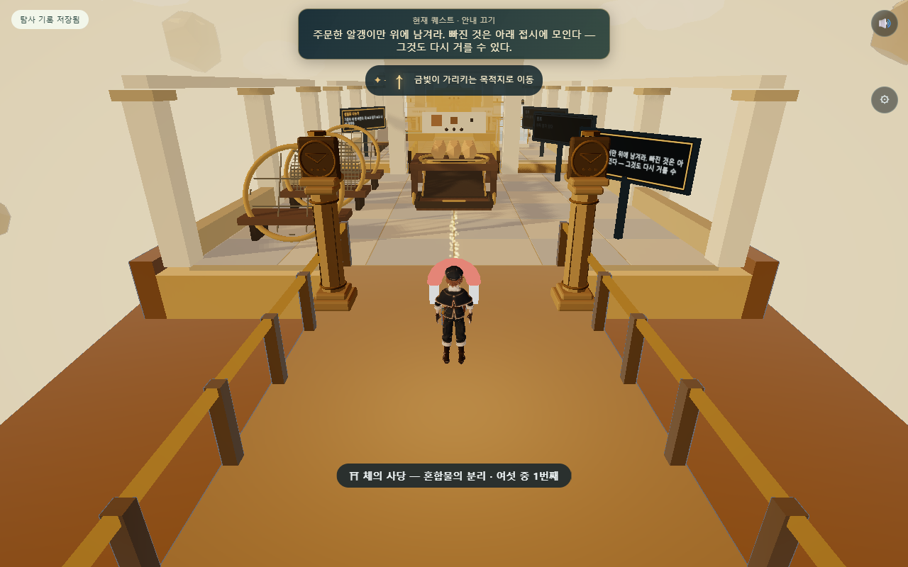
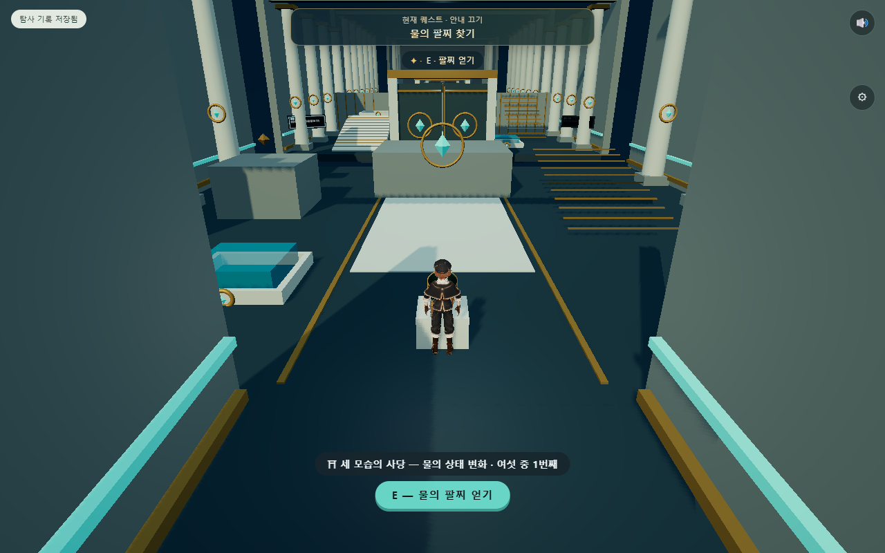
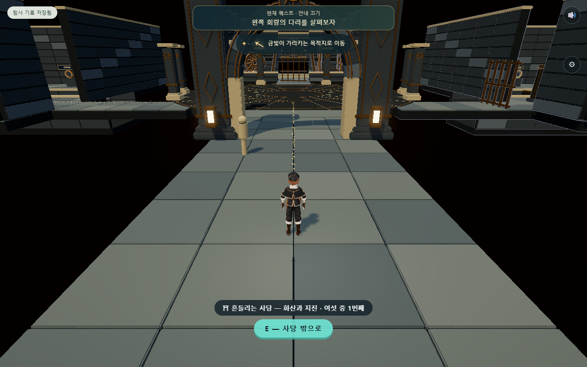
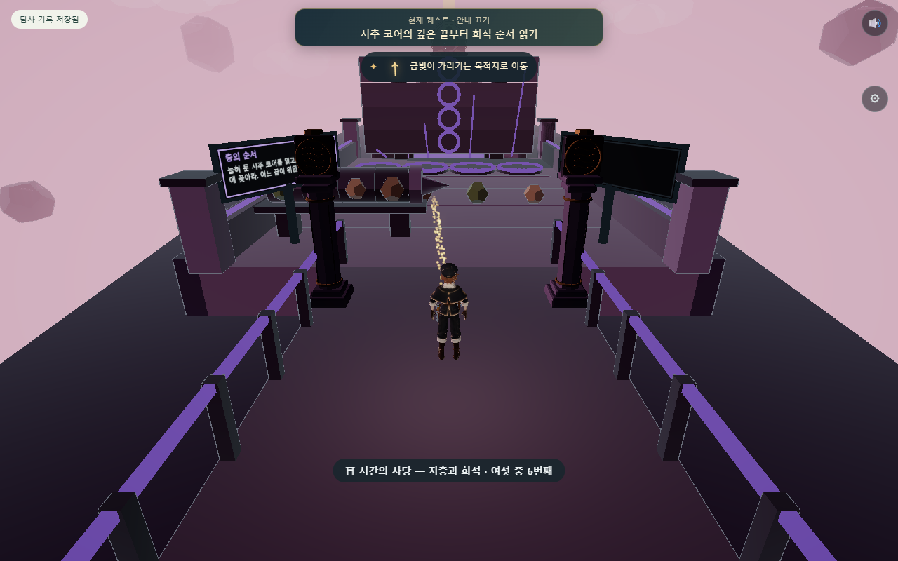

중간 화질, 1280×800 실제 웹 렌더. 입구 위치를 준비한 캡처이며 퍼즐 완주 근거와 구분한다. 장면별 재질·카메라·글자·목표 안내의 차이를 함께 검토한다.
우주 범선

전체 렌더 호출 236 · 삼각형 186825
행성 탐험

전체 렌더 호출 493 · 삼각형 1363583
균형의 사당

전체 렌더 호출 513 · 삼각형 597943
그림자 사당

전체 렌더 호출 527 · 삼각형 113183
분리의 사당

전체 렌더 호출 633 · 삼각형 114833
물의 신전

전체 렌더 호출 758 · 삼각형 293104
불의 신전

전체 렌더 호출 289 · 삼각형 748525
시간의 사당

전체 렌더 호출 679 · 삼각형 315243